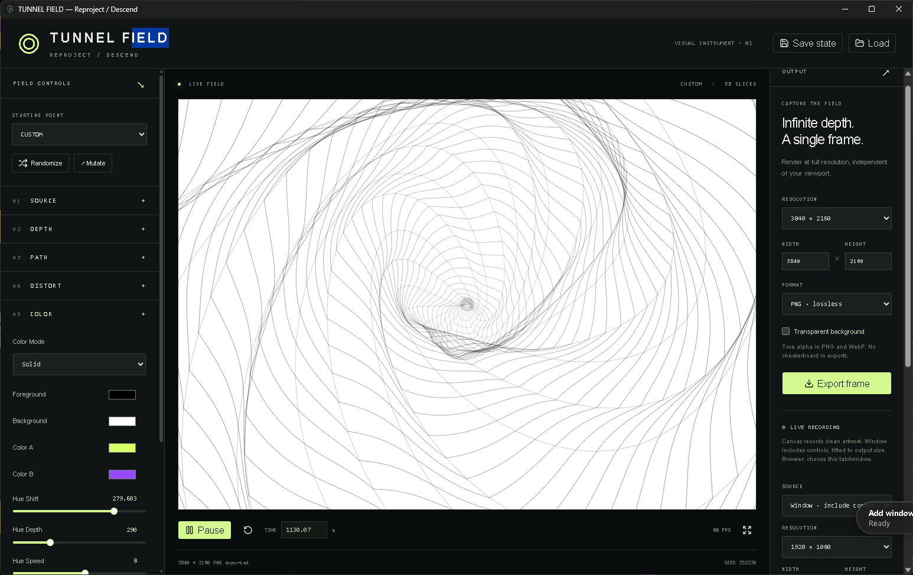

A machine by Travers MacMaster
TunnelFieldAnimated Psychedelic Tunnel Generator
TunnelField is an animated tunnel generator for creating evolving geometric tunnels, optical depth effects, psychedelic motion and experimental generative visuals.

What you can make
Animated Psychedelic Tunnel Generator
Build still optical-tunnel artwork or animated tunnel sequences from repeating geometric cross-sections, paths, palettes and depth effects.
How the process works
A source shape repeats through depth along a configurable path. Distortion, section spacing and movement transform that structure into geometric animation and occasional trippy visuals without defining the whole instrument by one style.
Inputs and source material
Choose from built-in source shapes and configure the path, depth, distortion, palette and Auto Movement controls.
Save and export
Export a still image or record WebM in the browser using landscape, portrait or custom output dimensions.
Getting started
How to use TunnelField
- 01Choose a source shape and adjust the number and depth of its repeated sections.
- 02Change the path, distortion and palette, or use Auto Movement to vary the scene.
- 03Choose landscape, portrait or custom output dimensions. Export a still or record WebM in the browser.
TunnelField in motion
Output examples


From the same studio